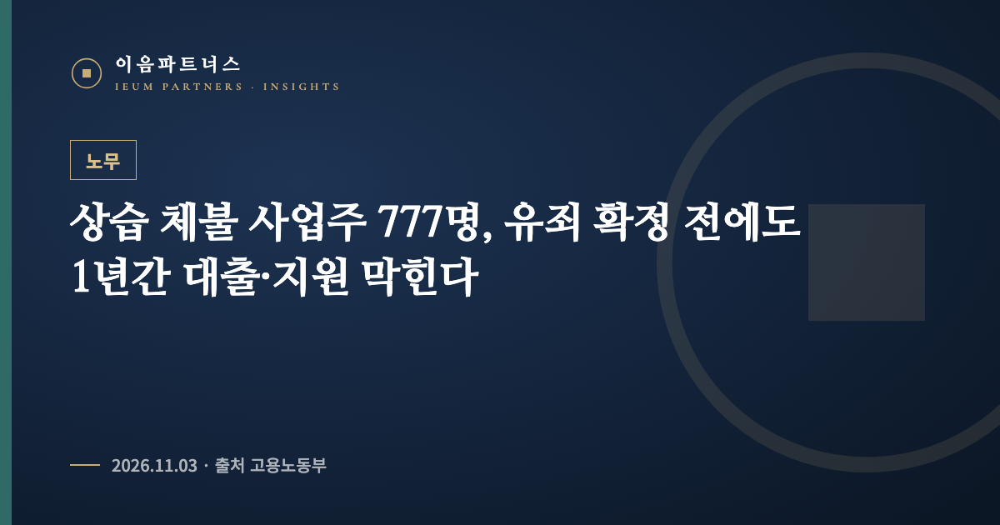

상습 체불 사업주 777명, 유죄 확정 전에도 1년간 대출·지원 막힌다

임금체불은 지금까지 재판에서 유죄가 확정돼야 명단 공개나 신용제재 같은 불이익이 따랐습니다. 그런데 2025년 10월 도입된 상습체불사업주 제도로 유죄 확정 전이라도 체불을 반복하면 1년간 금융거래와 정부 지원이 막힐 수 있게 됐고, 2026년 11월 3일 첫 대상자 777명이 정해졌습니다. 이 글에서는 대상 기준과 제한 내용, 대표님이 확인할 것을 정리합니다.
정책자금 대출이나 정부·지자체 지원사업을 준비하는 회사라면 이 제재는 그 자체로 큰 걸림돌이 될 수 있습니다. 체불 이력이 걱정되거나 지원사업 일정과 겹친다면 카카오톡 채널 이음파트너스에서 함께 점검해 보실 수 있습니다.
무엇이 결정됐나
고용노동부는 2026년 11월 3일 임금체불정보심의위원회를 열어 상습체불사업주 777명에게 신용제재를 결정했습니다. 정부는 “체불로 인한 유죄 확정 전이라도 상습체불이 명확한 경우 신용제재 등 조치”를 한다고 밝혔습니다(고용노동부 보도자료).
누가 상습체불사업주가 되나
기존 명단 공개와 신용제재는 체불로 유죄가 확정된 사업주만 대상이어서, 체불을 반복해도 판결 전까지는 제재가 어려웠습니다. 새 제도와 기존 제재를 비교하면 다음과 같습니다(고용노동부 보도자료).
| 구분 | 내용 |
|---|---|
| 상습체불사업주(새 제도) | 유죄 확정 전이라도 3개월분 이상 임금 체불(퇴직급여 제외), 또는 5회 이상 체불이면서 체불 총액 3천만 원 이상(퇴직급여 포함) → 1년간 신용제재 |
| 명단 공개(기존) | 3년 이내 체불로 2회 이상 유죄 확정, 1년 내 체불 총액 3천만 원 이상 → 3년간 공개 |
| 신용제재(기존) | 3년 이내 체불로 2회 이상 유죄 확정, 1년 내 체불 총액 2천만 원 이상 → 7년간 |
대상자는 바로 정해지지 않습니다. 대상자 추출, 통지와 3개월 이상의 소명(사정을 설명하고 자료를 내는 절차), 소명자료 검토, 위원회 심의를 거쳐 결정되고 그 뒤 1년간 제재가 이어집니다. 이번 777명은 소명 기간을 거치고도 상습체불사업주가 아님을 입증하지 못한 경우입니다.
어떤 제한을 받나
상습체불사업주로 결정되면 종합신용정보집중기관인 한국신용정보원에 1년간 신용관리 대상자로 등재돼 대출 등 금융거래가 제한됩니다. 국가와 지방정부의 보조·지원사업 참여도 제한됩니다.
정부 자료로는 2025년 체불 피해 노동자가 25.6만 명으로 3년 만에 처음 줄었고, 2026년 1~8월 체불액도 전년 같은 기간보다 15.5% 감소했습니다. 그럼에도 정부는 체불 법정형 상향, 도급 구조의 체불을 막는 임금구분지급제(2027년 1월 시행), 퇴직급여 사외적립 단계적 의무화와 체불 다발 업종 전수조사를 이어 가겠다고 밝혔습니다.
대표님이 지금 확인할 것
- 최근 1년 사이 임금 지급이 밀린 달이 있는지, 밀린 횟수와 총액이 얼마인지
- 노동청에서 대상자 통지를 받았다면 3개월 이상 주어지는 소명 기간 안에 지급 내역과 사정을 자료로 정리하기
- 정책자금이나 정부·지자체 지원사업을 준비 중이라면 체불 이력이 걸림돌이 되지 않는지 먼저 확인하기(신청은 회사가 직접 하고, 지원 여부와 금액은 각 기관 심사로 정해집니다)
참고한 자료
- 상습체불사업주 777명, 1년간 신용제재 받는다 — 고용노동부 (2026.11.03)
제재는 결정되기 전 소명 단계에서 대응할 여지가 가장 큽니다. 우리 회사 체불 이력과 지원사업 일정을 함께 점검하고 싶다면 카카오톡 채널 이음파트너스로 문의해 주세요.
※ 이 글은 일반적인 정보 제공을 위한 것으로, 개별 사안은 세무사·노무사 등 전문가와 함께 확인하시기 바랍니다.